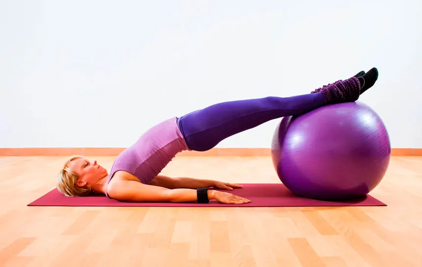
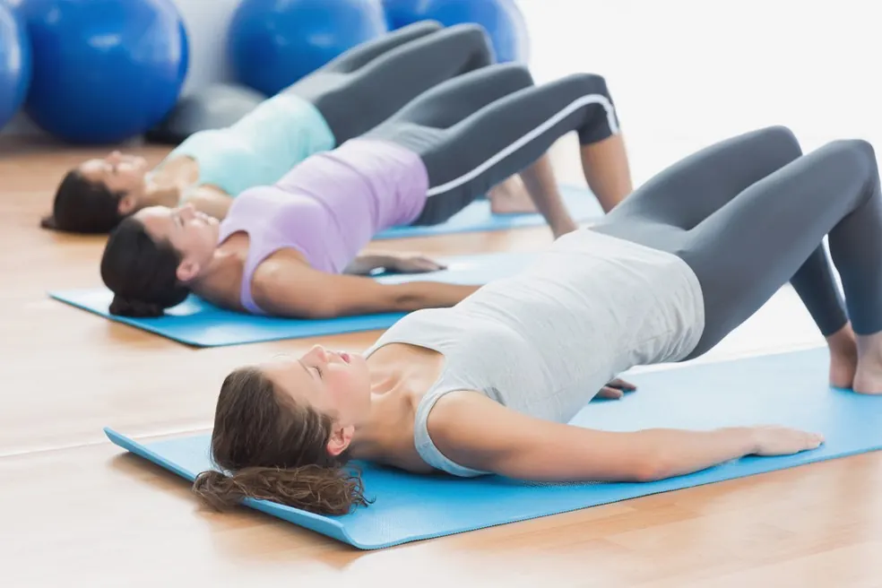

O Pilates é amplamente conhecido por seus benefícios na postura, flexibilidade e fortalecimento do *core*. No entanto, o Pilates Clínico, quando aplicado por um fisioterapeuta, torna-se uma ferramenta poderosa e segura para a saúde do assoalho pélvico.
Diferente do Pilates tradicional, o Pilates Clínico é adaptado para atender a necessidades específicas de reabilitação, sendo fundamental para quem busca prevenir ou tratar disfunções pélvicas.
A Conexão entre Pilates e Assoalho Pélvico
O assoalho pélvico é parte integrante do *core* (centro de força) do corpo. Os princípios do Pilates, como a respiração e a ativação do centro, naturalmente envolvem a conscientização e o fortalecimento desses músculos.
Benefícios do Pilates Clínico para a Saúde Pélvica:

- Fortalecimento Profundo: Ajuda a fortalecer os músculos do assoalho pélvico de forma integrada com o abdômen e a coluna.
- Melhora da Postura: Uma postura correta reduz a pressão sobre o assoalho pélvico, prevenindo o enfraquecimento.
- Conscientização Corporal: Ensina a mulher a identificar e ativar corretamente os músculos pélvicos, essencial para a prevenção de incontinência e prolapsos.
- Respiração Adequada: A técnica de respiração do Pilates ajuda a gerenciar a pressão intra-abdominal durante os exercícios, protegendo o assoalho pélvico.
Pilates na Fisioterapia Pélvica
Em um programa de fisioterapia pélvica, o Pilates Clínico é frequentemente incorporado após a fase inicial de reabilitação. Ele serve como uma ponte para o retorno a atividades físicas mais intensas, garantindo que o assoalho pélvico esteja protegido e funcional.

É crucial que o Pilates seja orientado por um profissional com conhecimento em saúde pélvica para garantir que os exercícios sejam realizados sem sobrecarga ou risco de lesão.
O Pilates Clínico é mais do que exercício; é reedução corporal. Descubra como ele pode transformar sua saúde pélvica e sua qualidade de vida.
>